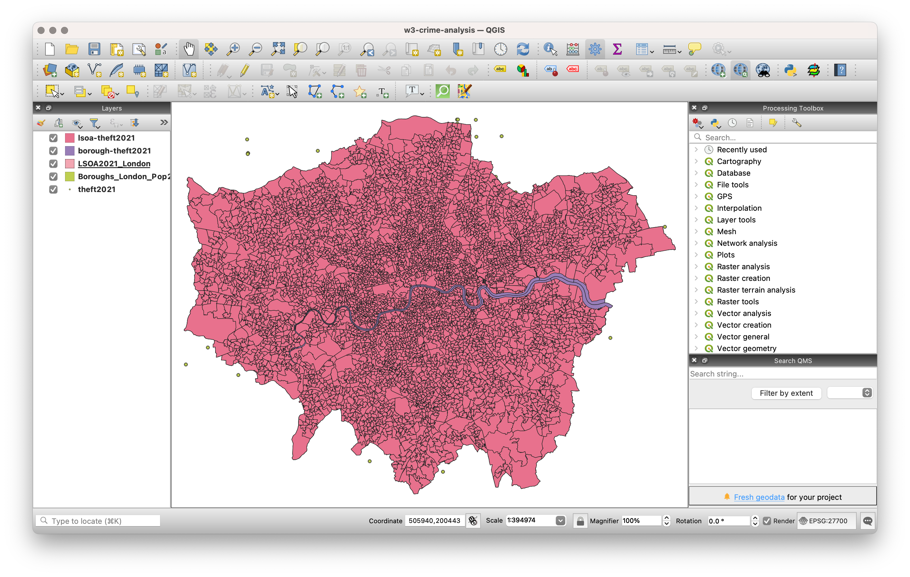

3 Cartography and Visualisation
This week’s lecture has given you an introduction on how to create a successful map. We further talked about map projections, cartographic conventionsm, and issues faced with the analysis of aggregated data at areal units. The practical component of the week puts some of these learnings into practice as we analyse crime rates in London at two different scales.
3.1 Lecture slides
The slides for this week’s lecture can be downloaded here: [Link]
3.2 Reading list
Essential readings
- Longley, P. et al. 2015. Geographic Information Science & Systems, Chapter 4: Georeferencing, pp. 77-98. [Link]
- Longley, P. et al. 2015. Geographic Information Science & Systems, Chapter 11: Cartography and Map Production, pp. 237-252. [Link]
- Wong, D. 2009. Modifiable Areal Unit Problem. International Encyclopedia of Human Geography 169-174. [Link]
Suggested readings
- Longley, P. et al. 2015. Geographic Information Science & systems, Chapter 12: Geovisualization, pp. 266-289. [Link]
- Usery, L. and Seong, J. 2001. All equal-area map projections are created equal, but some are more equal than others. Cartography and Geographic Information Science 28(3): 183-194. [Link]
3.3 Crime in London I
Over the next few weeks, we will explore the spatial patterns of crime across London from a spatial perspective. Reid et al. (2018) suggest:
Spatial analysis can be employed in both an exploratory and well as a more confirmatory manner with the primary purpose of identifying how certain community or ecological factors (such as population characteristics or the built environment) influence the spatial patterns of crime.
Against this background, we are actually going to answer a very simple question today: does our perception of crime rates (and its distribution) in London vary at different scales? Here we are looking to test whether we would make the ecological fallacy mistake of assuming patterns at the LSOA level are the same at the Borough level by looking to directly account for the impact of the Modifiable Area Unit Problem within our results. Here we will be looking specifically at a specific type of crime: Theft from a person.
The datasets you will create in this practical will be used in other practicals, so make sure to follow every step and export your data to your data folder at the end of the practical.
3.3.1 Crime data
For our crime data, we will use data directly from the Police Data Portal, which you can find at data.polic.uk. This data portal allows you to access and generate tabular data for crime recorded in the UK across different the different police forces since 2017.
In the United Kingdom, there are 45 territorial police forces (TPF) and 3 special police forces (SPF). Each TPF covers a specific area in the UK (e.g. the West Midlands Police Force), whilst the SPFs are cross-jurisdiction and cover specific types of crime, such as the British Transport Police. Therefore, when we want to download data for a specific area, we need to know which police force covers our area interest.
When you look to download crime data for London, there are two territorial police forces working within the city and its greater metropolitan area:
- The Metropolitan Police Force, which covers Greater London.
- The City of London Police, which covers the City of London.
London crime data
Normally, we would now head to the Police Data Portal and download our crime data. However, the manual processing that is required to clean and prepare the data that we need today is too exhaustive and far easier to do using programming, so you can download a pre-filtered spreadsheet below. Unzip the file and copy the csv into a new folder in your raw data folder called: crime.
| File | Type | Link |
|---|---|---|
| Theft from persons in 2021 | csv |
Download |
When mapping the data from the provided longitude and latitude coordinates, it is important to know that these locations represent the approximate location of a crime — not the exact place where it happened. This displacement is introduced on purpose to preserve anonymity of the individuals involved. The process by how this displacement occurs is standardised. There is a list of anonymous map points to which the exact location of each crime is compared against this master list to find the nearest map point. The co-ordinates of the actual crime are then replaced with the co-ordinates of the map point. Each map point is specifically chosen to avoid associating that point with an exact household.
3.3.2 Population data
If we want to study a phenomena like crime and aggregate it to an areal unit, we will need to normalise this by some denominator (e.g. population). Why? When we record events created by humans, there is often a population bias: simply, more people in an area will by probability lead to a higher occurrence of said event. Fortunately, we already prepared a 2021 LSOA population dataset last week.
In addition to our LSOA level dataset, we also need a population dataset for our London Boroughs today. We can do this utilising by joining Borough population data to Borough spatial data and creating a Borough2021_London.gpkg file.
Borough boundaries
A lot of data about London is collated by the Greater London Authority (GLA) and made available through the London Datastore. Whereas some of the data is relatively old, it is a good place to get some data specific to London:
- Navigate to the London Datastore: [Link].
- Click on Data in the navigation menu.
- Type London Boroughs into the search field.
- Download the
GeoPackagecontaining the boundaries of each of London’s 33 Boroughs. - Rename the file to
Boroughs_London.gpkgand move it toboundariesfolder in yourrawdata folder.
Borough population
The final data that we need is the total population for each of the London Boroughs in 2021. A good source for this is the 2021 Census again.
- Navigate to the Nomis portal: [Link]
- Click on Query data in the Data Downloads panel.
- Click on Census 2021 -> Topic Summaries.
- Click on TS007A - Age by five-year age bands.
- Select Geography and set Local authorities: district / unitary (as of April 2023) to Some.
- Under List areas within select London. Click on Tick all.
- Click on Download data at the left hand side of the screen.
- Once the data is ready for download, download the file to your computer and save it as
LondonBorough2021_population.xlsx. - Open the dataset in your spreadsheet editing software and extract the relevant information: the Borough names and associated population counts. Copy the data that you require into a new
csvfile and rename the columns asBoroughNamesandpop2021. - Now format the
pop2021column so that it is recognised as being a numeric column. - Save the file as a new
csvin yourdatafolder:LondonBorough2021_population.csv.
3.3.3 Mapping crime data
Setting up a project
- Start QGIS
- Click on Project -> New. Save your project as
w3-crime-analysis. Remember to save your work throughout the practical. - Before we get started with adding data, we will first set the Coordinate Reference System of our Project. Click on Project -> Properties – CRS. In the Filter box, type British National Grid. Select OSGB 1936 / British National Grid - EPSG:27700 and click Apply. Click OK.
Adding vector layers
- Click on Layer -> Add Layer -> Add Vector Layer.
- With File select as your source type, click on the small three dots button and navigate to your
LSOA2021_London.gpkgfile in yourboundariesfolder. Select the file, then click Add. You may need to close the box after adding the layer.
We now need to create our Borough population spatial layer. To do so, we need to repeat exactly the same process as last week in terms of joining our table data to our spatial layer. You should now be able to do this, so we will not provide you with detailed instructions. Remember, you need to:
- Load the respective Borough dataset as a Vector Layer found in your
raw/boundaries/data folder:Boroughs_London.gpkg. - Load the respective population dataset that you just created as a Delimited Text File Layer. Remember the settings, including no geometry!
- Join the two datasets together using the Join tool in the Borough dataset Properties box. Remember which fields to use, which to add, and to remove the prefix.
- Export your joined dataset into a new dataset within your
datafolder as:Boroughs_London_Pop2021.gpkg. - Make sure this dataset is loaded into your Layers / added to the map.
- Remove the original Borough and population data layers.
Because the population file that we downloaded does not contain Borough codes, we need to use the Borough names to join the two files together. Whilst it works here and we can easily manually check whether the join was successful because there are only 33 records, codes are preferred as there is much less room for error and incomplete joins. This means it is often worth it to spend a bit more time and find these codes over relying on names.
Adding point layers
We will now load and map our crime data. We will load this data using the Delimited Text File Layer option you would have used just now to load the Borough population, but this time we will be adding point coordinates to map our crime data as points.
- Click on Layer -> Add Layer -> Add Delimited Text File Layer.
- Click on the three dots button next to File Name and navigate to your
crime-theft-2021-london.csvin yourraw/crimefolder. - Click on the
.csvfile of this dataset and click Open. - Your file format should be set to
csv. In Record and Fields Options tickDecimal separator is comma,First record has field names,Detect field typesandDiscard empty fields. - Under Geometry Definition, select
Point coordinatesand set the X field toLongitudeand the Y field toLatitude. The Geometry CRS should be:EPSG:4326 - WGS84. Click Add.
- Click on the three dots button next to File Name and navigate to your
When you click Add, you should have gotten a pop-up from QGIS asking about transformations. Transformations are algorithms that convert data from one CRS to another. QGIS knows that the Project CRS is British National GRid but the Layer you are trying to add has a WGS84 CRS. QGIS is asking you what transformation it should use to project the Layer in the Project CRS. This is one of the key strengths of QGIS: it can project data ‘on the fly’. What this means is that QGIS will automatically convert all Layers to the Project CRS once it knows which transformation you would like to use so that they will all be rendered in the correct position with respect to each other. More details on this can be found in QGIS’ user manual section on working with projections.
- Click OK to accept QGIS’ suggested on-the-fly projection. You should now see your crime dataset displayed on the map canvas.
- We can test the temporary nature of the projection by looking at the CRS of the
crime-theft-2021-londonlayer. Right-click on the layer then select Properties -> Information and then look at the associated CRS. You should see that the CRS of the layer is stillWGS84.
We want to make sure our analysis is as accurate and efficient as possible, so it is best to reproject our data into the same CRS as our administrative datasets, i.e. British National Grid. This also means we will have the dataset to use in other projects, just in case.
- Back in the main QGIS window, click on Vector -> Data Management Tools -> Reproject Layer. Fill in the parameters as follows:
- Input Layer:
crime-theft-2021-london - Target CRS:
Project CRS: EPSG: 27700 - Reprojected: Click on the three buttons and Save to GeoPackage to create a new data file.
- Save it in your
raw/crimefolder ascrime-theft-2021-london-prj.gpkg, usingtheft2021as Layer Name. - Click Run. You should now see the new data layer added to your project. You can now close the Reproject Layer tool.
- Input Layer:
- You can now also remove the original
crime-theft-2021-londondataset, only keeping the reprojected version.
Counting points-in-polygons
The next step of our analysis involves assigning the crime point data to our administrative geographies. We will use the Count Points in Polygons in the Analysis toolset to count how many crimes have occurred in our LSOAs and our Boroughs. We will then have a count statistic that we need to normalise by population data to create a crime rate statistic.
- Click on Vector -> Analysis Tools -> Count Points in Polygons.
- Within the toolbox, select the parameters as follows:
- Polygons:
Boroughs_London_Pop2021 - Points:
theft2021[Note how both our data layers state the same CRS.] - No weight field or class field
- Count field names:
theft2021 - Click on the three dot button and Save to GeoPackage:
output->Borough2021_crime.gpkg, withborough-theft2021as Layer Name.
- Polygons:
- Click Run and Close the box. You should now see an
Outputlayer added to your Layers box. Rename the layer toborough-theft2021. - Right-click on the
borough-theft2021layer and open the Attribute Table. You should now see atheft2021column next to yourpop2021column. You can look through the column to see the different levels of crime in the each Borough. You can also sort the column, from small to big, big to small, like you would do in a spreadsheet software.
Whilst it is great that we have got our theft2021, what we actually need is a crime rate to account for the different population sizes across the Boroughs. To get our crime rate statistic, we are going to do our first bit of table manipulation in QGIS.
- With the Attribute Table of your
borough-theft2021layer still open, click on the pencil icon at the top left corner. This pencil switches on the Editing mode.
The Editing mode allows you to edit both the Attribute Table values and the geometry of your data. When it comes to the Attribute Table, it means you can directly edit existing values in the table or create and add new fields to the table. Whilst you can actually do the latter outside of the Editing mode, this Editing mode means you can reverse any edits you make and they are not permanent just in case you make a mistake. Using the Editing mode is the safest approach to editing your table, however, it might not always be the approach you use when generating new fields.
- Whilst in the Editing mode, click on New Field button (hotkeys:
ctrl + worcmd + wand fill in the Field Parameters as follows:- Name:
crime-rate - Comment: leave blank
- Type: Decimal number
- Name:
- Click OK. You should now see a new field added to our Attribute Table.
The empty field has NULL populated for each row, so we need to find a way to give our Boroughs some crime rate data. To do this, we will calculate a simple Crime Rate using the Field Calculator tool provided by QGIS within the Attribute Table. We will create a crime rate that details the number of crimes per 10,000 people in the Borough.
- Whilst still in the Editing mode, click on the Abacus button (
ctrl + iorcmd + i), which is known as the Field Calculator. - In the Field Calculator window:
- Check the Update existing field box.
- Use the drop-down to select the
crime-ratefield. - In the Expression editor, add the following expression:
( "theft2021" / "pop2021" ) * 10000 - Once done, click OK.
- Click on the Save button to save these edits. Click again on the Pencil button to exit Editing mode.
The crime-rate is stored as a decimal as this is required for the calculation to succeed, but ultimately you cannot have half a crime. You can transform the decimal number to an integer by forcing the crime-rate column to a new field using the same Field Calculator. Instead of ticking the Update existing field box you would now keep the Create a new field box ticked. Name the new field crime-rate-int, make sure the Output field type is set to Whole number (integer), and use the following expression to create a new field with an integer value: to_int("crime-rate"). Save your changes by clicking on the Save button.
- We now have our Borough crime rate dataset ready for mapping. We just now need to repeat this process to have our LSOA dataset. So, add the
LSOA2021_London.gpkgfile to your project and repeat the above process to create acrime-rateandcrime-rate-intcolumn within the LSOA dataset as well. After reordering some of the layers, your screen should look something like this:

Mapping crime data
Now you have both datasets ready, it is time to style the maps. Remember to use the Properties box to symbolise your mapss. Think through using an appropriate colour scheme, perhaps have a look at the online colorbrewer 2.0 for inspiration if you do not want to use the default settings. Once you are happy with their symbolisation, we can turn them into proper publishable maps using QGIS’s Print Layout.
If you have used ArcMap before, Print Layout is similar to switch the view of your map canvas to a print layout within the main window but in QGIS’s case, it loads up a new window.
From the main QGIS window, click on Project -> New Print Layout. In the small box that first appears, call your new print layout: crime-map-borough-lsoa. A new window should open up that shows a blank canvas. On the left-hand side of the window, you will find buttons to add print layout items: the current QGIS map canvas, text labels, images, legends, scale bars, basic shapes, arrows, attribute tables and HTML frames. In this toolbar you also find buttons to navigate, zoom in on an area and pan the view on the layout a well as buttons to select any layout item and to move the contents of the map item.
On the right-hand side of the window, you will find two set of panels. The upper one holds the panels Items and Undo History and the lower holds the panels Layout, Item properties and Atlas generation. Today, we are most interested in the bottom panel as Layout will control the overall look of our map, whilst Item properties will allow us to customise the elements, such as title or legend, that we may add to our map.
In the bottom part of the window, you can find a status bar with mouse position, current page number, a combo box to set the zoom level and the number of selected items if applicable. In the upper part of the window, you can find menus and other toolbars. All print layout tools are available in menus and as icons in a toolbar.
Working with maps in the Print Layout is simple but it can be a little fiddly and, to make more complicated maps, requires you to understand how to use certain aspects of Print Layout, such as locking items. If you get stuck, have a look at the training manual or the detailed documentation.
To start with creating a map, you use the Add Map tool to draw a box in which a snapshot of the current active map you have displayed in your QGIS main window will be loaded.
- Click on the Add Map tool and draw a box in the first half of our map to load our current map. Note, you can move your map around and resize the box simply by clicking on it as you would in Word etc.
- With your map selected, head to the Items Properties panel and look for the Scale parameter.
- Here we can manually edit the scale of our map to find the right zoom level.
- Have a go at entering different values and see what level you think suits the size of your map.
- Keep a note of the scale, as we will need this for the second map we will add to our map layout - our LSOA map.
- Next, in the same panel, if you would like, you can add a frame to your map - this will draw a box (of your selected formatting) around the current map.
- In the same panel, note down the size of your map - we want to make sure the next map we add is of the same size.
- Note, if you need to move the position of the map within the box, look for the Move Item Content tool on the left-hand side toolbar.
- Once you are done, finally click on the Lock Layers and Lock Style for layers.
By locking the Layers (and their symbology) in our map, it means we can change our data/map in our main QGIS window without changing the map in the Print Layout - as we will see in a minute when adding our Borough crime rate map. If we do not lock our layers, our map would automatically update to whatever is next displayed in the main QGIS window.
- Click on the Add Legend tool and again, draw a box on your map in which your legend will appear.
- As you will see, your Legend auto-generates an entry for every layer in our Layers box in the main QGIS application:
- In Item Properties, uncheck auto-update - this stops QGIS automatically populating your legend and enables you to customise your legend.
- First, let us rename our layer in the legend to: Borough Crime Rate (per 10,000 people).
- Next, we want to remove all other Layers, using the - (minus) button
- We can also customise the Legend further, including type, size and alignment of font. Go ahead and style your legend as you would prefer.
- Move the Legend to an appropriate part of the layout near your Borough crime rate map - resize if necessary.
Now we are finished with the Borough map, we want to make sure we do not change any aspect of its layout. To do so, we need to lock both the map layer and legend in the Items panel. This prevents us accidentally moving items in our layout. Note, this is different to locking your layers in the Items Properties as we did earlier.
- In the Items panel, click the Lock check box for both our map layer and legend.
- In the main QGIS window, uncheck your
borough-theft2021layer and make sure yourlsoa-theft2021layer is now visible. - Return to the Print Layout window annd repeat the process above of adding a map to the window. This time you should see your LSOA map loaded in the box (and you should see no changes to your Borough map).
- Place your LSOA map next to your LSOA map - use the snap grids to help.
- Set your LSOA map to the same zoom level as your Borough map.
- Make sure your LSOA map is the same size as your Borough map.
- Add a frame if you want.
- Lock your layer and its symbology in the Items Properties once ready and the lock your layer in the Items panel.
We now just need to add a second legend for our Borough map.
If we had standardised our values across our two maps, then we would only need to use one legend. However, in this case, as there are large differences in the value ranges, we need to have two legends.
- Repeat the process as above to add a Legend for our LSOA map.
- Remember to re-title the legend to make it more legible/informative.
- Match the same formatting for a clean look.
- Once complete, lock these two items in the Items panel as well.
- Now we have our two maps ready, we can add our main map elements. Using the tools on the left-hand tool bar:
- Add a scale bar: use the Item Properties to adjust the Style, number of segments, font, etc.
- Add a north arrow: draw a box to generate the arrow and then use the Item Properties to adjust..
- Add a title at the top of the page, and subtitles above the individual maps.
- Finally add a box detailing our data sources, you can copy and paste the following: Contains National Statistics data © Crown copyright and database right [2021] (Open Government Licence). Contains Ordnance Survey data © Crown copyright and database right [2021]. Crime data obtained from data.police.uk (Open Government Licence).
Once you have added these properties in, you should have something that looks a little like this:
The only thing outstanding is to export our map to a file. Go to Layout -> Export as Image and then save it as London-2021-crime-rate.png.
3.4 Assignment
- Looking at the maps you have created, how does your perception of crime (and its distribution) in London vary at different scales?
- At the moment, we have looked at the crime rate as a relative amount. We therefore use a sequential colour scheme that shows, predominantly, where the crime rate is the highest. Alternatively, we could use a diverging colour scheme that could show us where the crime rate is lower and/or higher than a critical mid-point, such as the average crime rate across the Boroughs and LSOAs. Create a map of crime in London, at both the Borough and LSOA levels that shows for each of these administrative geographies the percentage difference from the overall mean crime rate.
- You will need to start by calculating the average crime rate for both datasets and subsequently calculate the difference from these values for each geography.
- All calculations can be done using the field calculator in QGIS, but you might have to think through writing the right expression.
3.5 Before you leave
That is us all done. Remember to save your project. And remember the reading list.